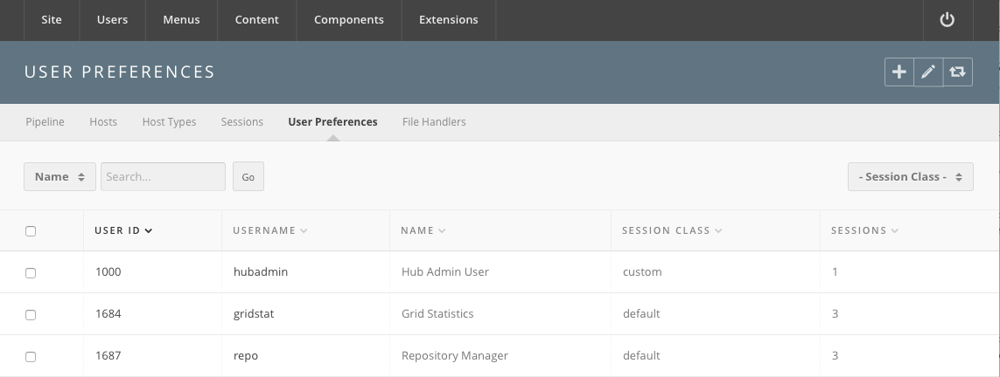

Hub managers
Tools
The Tools component has two halves. The half a tool contributor sees lives on
the site, at /tools/pipeline, and is where a tool moves from registration to
publication. The half described here lives in the administrator interface and
manages the machinery around it: execution hosts, session zones, running
sessions, per-user session limits, and file handlers.
For the pipeline itself — the nine tool states, the administrator controls, the install and publish steps, and the group membership those controls require — see Tools in the maintenance section. That chapter is the one to read before touching a tool contribution.
Go to Components → Tools. The submenu holds:
| Screen | Shown |
|---|---|
| Pipeline | always |
| Hosts | always |
| Host Types | always |
| Zones | only when the Zones option is on |
| Sessions | always |
| User Preferences | always |
| File Handlers | always |
| Windows | only when the Access Key ID option is set |
Every screen needs core.manage on com_tools. That is separate from the
pipeline's own controls, which are granted by membership of the group named
in the Admin Group option.
Pipeline
A list of every tool contribution: ID, Name, Title, State, Registered, Changed, and Versions. Above it are a Search box and a State drop-down. The toolbar carries only Options and Help — tools are not created or deleted here.
Clicking a tool's name or title opens a small edit form carrying only Title, Ticket ID, and State. State offers all ten values — Unpublished, Registered, Created, Uploaded, Installed, Updated, Approved, Published, Retired, Abandoned. Setting it here writes the state directly and skips everything the pipeline would otherwise do, so use the site-side Flip Status control instead unless you are repairing a stuck contribution.
Options in the toolbar opens the component's configuration; the full parameter list is in the generated reference.
Versions
The number in the Versions column links to the tool's version list — ID, Name, Version, Revision, State, and, when DOI registration is configured, DOI.
A version's edit form has a Details tab with Command, Timeout, Required Host, Middleware and Parameters, a DOI panel, and a Zones tab listing the zones the version may run in.
The DOI column appears only when the Enable DOI service? option is on.
Hosts
The execution hosts that run tool sessions. Columns: Name, Service Host, Provisions, Status, Uses, Zone, and Broken Containers.
A host's edit form asks for Name (a valid hostname), Service Host, the Types it provides, and its Zone. The right-hand side shows the host's live status, its Tool Sessions, and its Container Statuses.
The Provisions cell lists every host type; the ones the host provides are bold. Each is a link that flips that capability bit on the host, so you can take one capability away without touching the rest. The Status cell links to a live status page for the host.
Host Types
The capability bits a host advertises and a tool requires. Columns: Name, Bit#, Description, and References — the number of hosts using the type.
An entry is a Name, a Value (the bit number), and a Description. A tool's Required Host field is matched against these.
Zones
Zones group hosts into pools — a local cluster, a remote site — so a tool version can be pinned to one. The screen appears only when the Zones option is turned on.
Columns: Zone, Type, State, Default, Master, SSH Key Path, and Locations. Type is Local or Remote; state is up or down; one zone is the Default and the toolbar's Make default sets it.
A zone's edit form has a Details tab and a Locations tab. Details takes the Zone name (letters, numbers, dashes and underscores), a Title, a Description, a Master, a Type, and a State, plus an Image panel and a Parameters fieldset holding the VNC and websocket proxy settings:
- Websocket VNC Proxy Server Enabled, Websocket VNC Proxy Server, Secure Websocket VNC Proxy Server
- VNC Proxy Server Configuration Enabled, VNC Proxy Server, Secure VNC Proxy Server
Locations are IP ranges — IP from, IP to, Continent, Country, Region, City — used to send a visitor to the nearest zone. A zone must be saved before locations or an image can be added.
Sessions
Two screens, reached from the sub-navigation: Active and Session classes.
Active
Every tool session currently running. Columns: Session, Owner, Viewer, Started, Last accessed, Tool, Exec host, and Stop. Drop-downs filter by Tool, Execution Host, and Viewer.
The Stop cell terminates one session. Ticking rows and pressing Delete terminates several. Terminating is immediate and the user is not warned.
Session classes
A session class is a named session allowance. Columns: ID, Alias, and Jobs Allowed.
The install creates one class, default, allowing 3 concurrent sessions.
That is the number every user gets unless something overrides it.
A class's edit form has:
- Alias — must be unique, and cannot be
custom, which is reserved. - Jobs Allowed — the number of concurrent sessions.
- User Access Groups — the access groups this class applies to. A user added to one of these groups is given this class automatically.
Deleting a class moves everyone in it back to the default class. The
default class itself cannot be deleted.
User Preferences
The per-user override of the session allowance. This is the screen the old version of this page described.

The list shows User ID, Username, Name, Session class, and Sessions, all sortable. Above it, a Search by drop-down (Username or Name) with a search box and Go, and a - Session Class - filter.
Only users with an explicit entry appear. Everyone else runs on the class
their access groups give them, or on default.
To change a user's limit:
- Go to Components → Tools → User Preferences.
- If the user is listed, tick the row and press Edit. If not, press New and find them with the User field — search by name, or type a username or user ID.
- Set Session class. Picking a named class fills Sessions from that class and makes it read-only. Picking custom leaves Sessions editable, so you can give one person a number no class offers.
- Fill in Sessions if you chose custom. It must be numeric.
- Preferences takes free-form extra settings for the session.
- Press Save & Close.
Ticking rows and pressing Default in the toolbar puts those users back on
the default class.
File Handlers
A file handler tells the hub which tool opens a given file from a user's storage. Columns: Tool alias, Prompt, and Rules.
A handler is a Tool alias chosen from the installed tools, a Prompt shown to the user, and a list of rules. Each rule is an Extension and a Quantity — how many files of that extension the tool accepts. Add rule and Delete rule build the list.
If the drop-down says No tools installed, no tool has reached the Installed state yet.
Windows
Present only when the component's Access Key ID option holds an Amazon Web Services key. It manages Windows tool instances on AWS: ID, Name, Title, UUID, in-use and available session counts, and State, with per-instance session and usage views and a Terminate action.
Leave the option empty on a hub with no Windows tools and the screen never appears.
Rewritten and checked against 2.4-main @ f22290e4e4 on 2026-09-09.